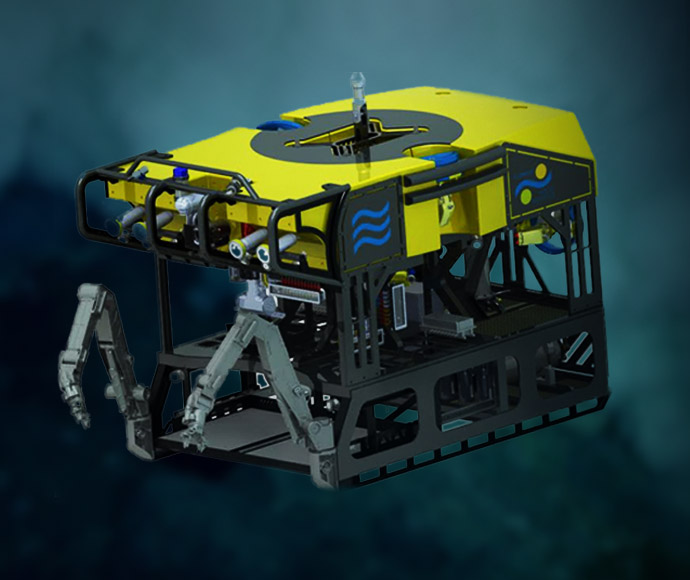

Alvar Carranza
PHD, BIODIVERSIDAD Y CONSERVACIÓN
En esta sección encontrarás información detallada sobre la Expedición Uruguay Sub200, el equipo de científicos que participó y los objetivos del proyecto. Podrás conocer quiénes integraron la misión, qué tecnologías se utilizaron y cómo se llevó a cabo la investigación en aguas profundas.
PHD, BIODIVERSIDAD Y CONSERVACIÓN
PHD, GEOLOGÍA MARINA
UDELAR-CURE, Uruguay
Ministerio de Educación y Cultura, IIBCE, Uruguay
UDELAR-CURE, Uruguay
UDELAR-CURE, Uruguay
UNC, Chile
UFRJ, Museu Nacional, Brasil
UDELAR-FCIEN, Uruguay
CONICET, MACN, Argentina
Senckenberg Research Institute and Natural History Museum, Germany
SMU, Uruguay
Ministerio de Educación y Cultura, MNHN, Uruguay
CONICET, MACN, Argentina
UBA, FCEN, Argentina
UNESP, Faculdade de Ciências e Letras, Brazil
UDELAR-FCIEN, Uruguay
MGAP/DINARA, Uruguay
El buque de investigación global Falkor (too) tiene una eslora (largo) de 110,6 metros y una manga (ancho) de 20 metros . La cubierta de popa ofrece una superficie de 960 m² y cuenta con 70 literas. Además, ofrece 8 laboratorios, incluidos un laboratorio principal de 105 metros cuadrados, laboratorios húmedos, un laboratorio científico de agua de mar, un laboratorio de electrónica informática, un laboratorio de robótica y un laboratorio frío para trabajo biológico

El ROV SuBastian es un vehículo submarino operado a distancia (ROV) de clase mundial que puede sumergirse hasta 4.500 metros (14.764 pies) y está equipado con cámaras de alta definición, iluminación avanzada y una variedad de herramientas científicas y de muestreo. El ROV es operado por un equipo altamente capacitado a bordo del Falkor (too) y se utiliza para explorar y estudiar los ecosistemas marinos profundos, recolectar muestras biológicas y geológicas, y capturar imágenes impresionantes del fondo marino.
